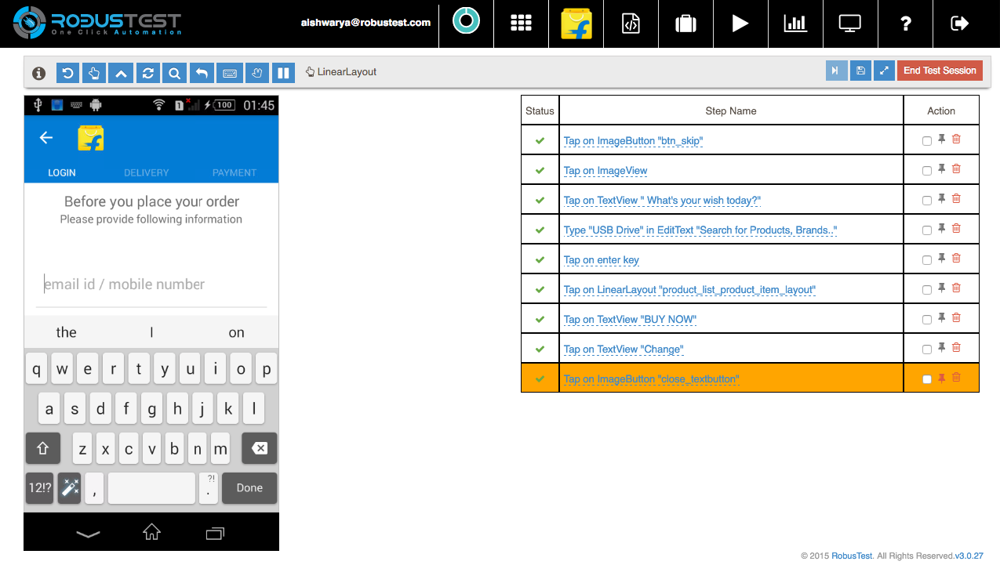
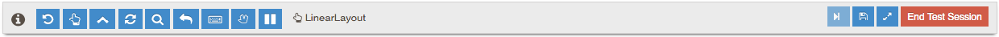

6. Recording Test Case¶

On the project page, click on the Record button to start a recording session. In the recording session, you can record a new test case. On the device selection screen, select the device you wish to record on. Remember that the test case that you record will run on any device irrespective of the device that you recorded your test case on.
After selecting the mobile device, you will be taken to the record session page. The page consists of the device screen, a table of automation steps that is generated as actions are recorded and a header with options for creation for automation tests.
There are various options available in the header that help in creation of your automation test
- Information button - Hovering over the information button gives you information on the app, its version and the device details.
- Back button - records an action of a back button being pressed
- Enter value - allows user to send input to an input object on the app
- Background app - sends the app to the background for 10 seconds
- Reset Application - resets the application to make it a fresh installation
- Search Key - Click on this button to add an action for tapping on Search Key on the device keyboard.
- Enter Key - Click on this button to add an action for tapping on Enter Key on the device keyboard.
- Hide Keyboard - hides the keyboard on the screen to allow the user to access other objects
- Swipe - Used for recording a swipe action on the device screen. To record a swipe action, just click on this button and record the swipe action on the screen.
- Pause Recording - pauses the recording to enable the user to perform actions on the device or app which s/he does not want to be recorded in the test script.
When you hover your mouse pointer over the app that you are testing, you will notice a rectangular placeholder overlaid on top of various objects on the screen. You can also find the name of the object that is currently selected in the header. When a particular object is highlighted using the placeholder, it is selected and you can record various actions related to that object. Upon clicking on an object, you will get recording options related to that object. Some of the popular actions are
- Tap - this records a Tap action on the object that you have selected.
- Click - this records a Click action on the object that you have selected.
- Long Press - this records a Long Press action on the object that you have selected.
- Zoom - this records a Zoom In action on the screen
- Pinch - this records a Zoom Out action on the screen
- Verify Object - this option allows user to create a check (or an assertion as automation engineers would call them) on an object. In the verify dialog, you will notice all the attributes for the object is selected, along with their respective values. If you wish to place a check on a particular object attribute(s), just check the box next to it. When the test case runs, it will check to ensure that the value for that attribute is as expected. In case the value is not as expected, the test step fails.
- Inspect Element - this option allows user to study the object and its attributes. This is useful for advanced users and for debugging.
Every action that you record on the app is added as a step in the test case table. There are many useful option available as part of the Recording session.
- If you wish to delete a step you can do that by clicking on the delete button.
- If you wish to re-run a step or a group of steps, you can do that by selecting the steps and clicking on the Run Steps button in the header.
- You can save your test case and continue the recording session. Once you have saved your test case, you could either update it or create a new one.
- You can also edit the name of the test step to make it more intuitive.
- An orange highlighter points to the location of the current execution pointer
- The pin icon in the Action column enables user to select the current execution point
When a user clicks on a text field, the system shows a text box to enter the text value. When user enters a value in the text box, this is recorded as an input value for the field.
After a test case has been created, click on the Save button to provide a name and save this test case. Click on End session to close the recording session without saving the test case.
Upon saving the test case, you will see your saved test case along with the actual test script and related information. There are four tabs on the test case page.
- Test Step: This tab lists the steps of the test case
- Test Script: This tab shows the test script to be executed when the automated test case runs. The script is shown in a smart script editor. If the user wishes to add custom code to his/her test scripts, s/he can do that in this script editor. The editor also checks for syntax correctness.
- Meta Data: The test script has been designed in a modular way to separate the app objects from the test script. This ensures that the test case can be easily updated and maintained as builds change over time.
- User Data: In line with the modular design, the user data too is separated out from the test script and is available in the User Data tab.
You can click on the End Session button to end the recording session.
Re-record a test case
Re-record is a feature used to edit an existing test case without writing any code. It can also be used to create a new test case by extending an existing one.
When a user clicks on Re-record, the device selection menu is displayed. Upon selection of a device, the re-record screen is shown.
The re-record screen resembles the record screen with a few additions.
Play: Clicking on the Play button executes one step at a time. When a user wants to insert a new step, s/he just needs to Play until they reach the step after which they need to record the new step. Then they can record their action as they would do while originally recording a test case. After adding new steps or deleting an existing step, the user can click on Save to update the existing test case. Alternatively, the user can also use Save As to save as a new test case.